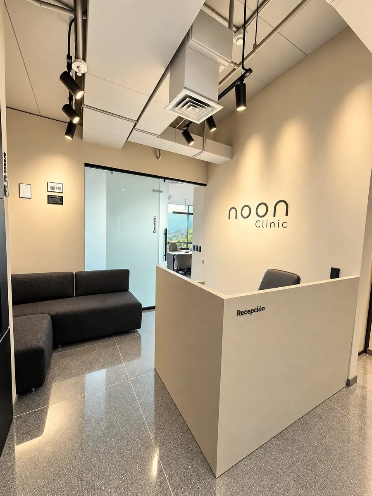
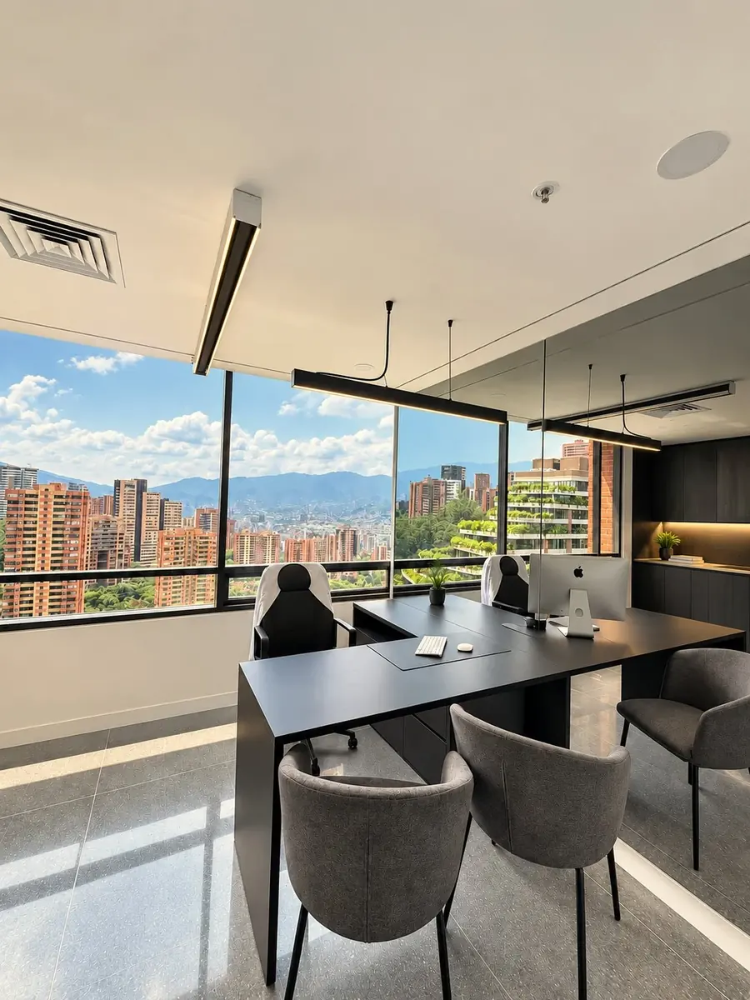
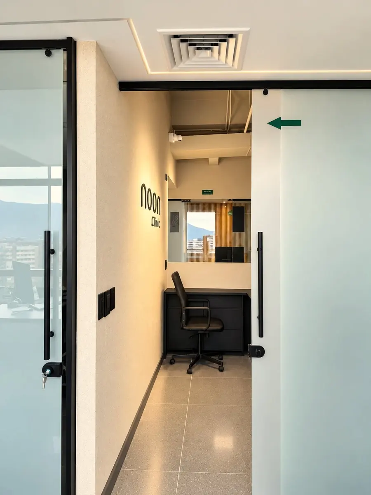
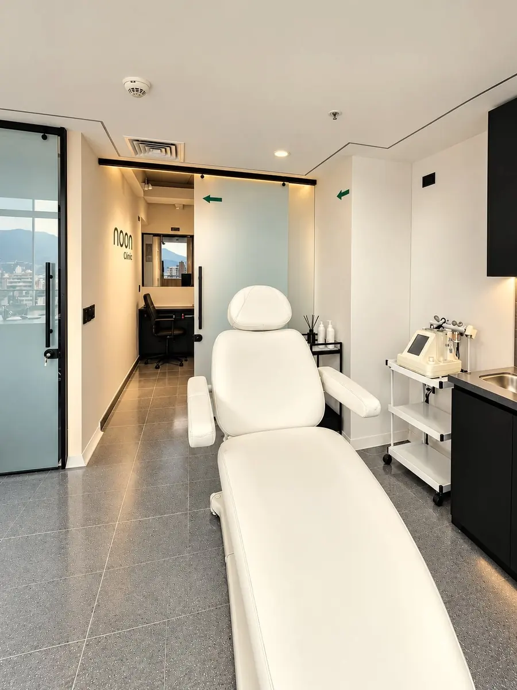
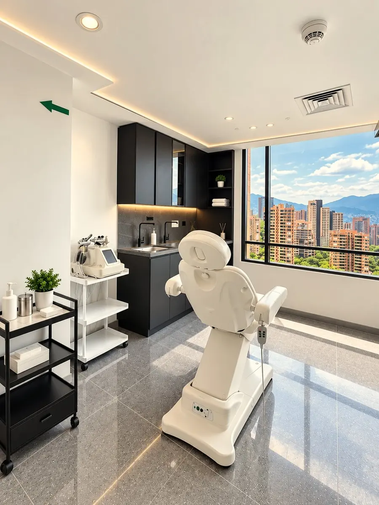
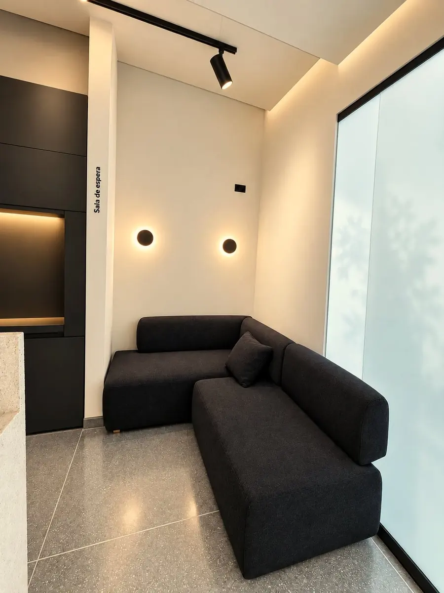
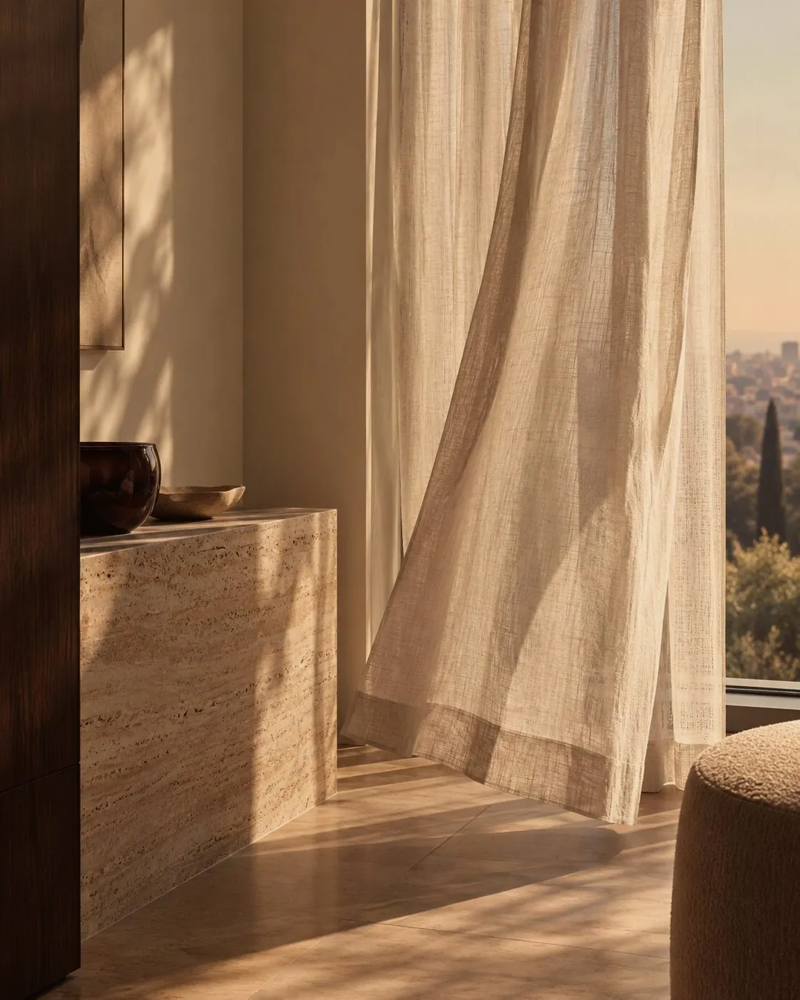

Estética con criterio
Cirugía plástica y medicina estética en Medellín
La clínica
Un espacio pensado
para la calma.
Privacidad, luz natural y una vista abierta. Así se siente tu valoración en noon.








Explora
¿Qué zona quieres tratar?
Lo que creemos
Primero entendemos.
Después hablamos de posibilidades.
La recomendación nace del criterio clínico y de lo que cada persona quiere preservar.
Encuentra tu procedimiento
Dos toques
y te orientamos.
- Zona
- Objetivo
- Para ti
¿Qué te gustaría mejorar?
Esto podría ser para ti
Es una orientación: la indicación final la da el especialista en tu valoración.

Medicina estética
Realzar lo tuyo.
Tratamientos médicos no quirúrgicos para la piel, el rostro y el cuerpo. Resultados naturales, con criterio clínico.
- InyectablesToxina botulínica, ácido hialurónico, bioestimuladores e hilos.
- PielCalidad, luminosidad, manchas y textura.
- TecnologíasLáser, HIFU, radiofrecuencia y tratamientos corporales.
- BienestarSueroterapia, manejo médico del peso y nutrición.
Especialistas
Médicos especializados.
Decisiones personales.


Tu proceso
Tres pasos.
- IValoraciónTe escuchamos, te examinamos y te decimos qué tiene sentido para ti.
- IITu plan por escritoProcedimiento, tiempos, cuidados y presupuesto, claros desde el principio.
- IIIProcedimiento y seguimientoCon acompañamiento cercano hasta el alta.
Blog
Para leer antes de decidir.
 Antes de tu cirugía: la lista que de verdad importaNo es la cirugía lo que más se complica: es llegar sin los exámenes, sin ajustar los medicamentos y sin la casa lista.Leer
Antes de tu cirugía: la lista que de verdad importaNo es la cirugía lo que más se complica: es llegar sin los exámenes, sin ajustar los medicamentos y sin la casa lista.Leer Melasma: por qué aparece y cómo se controlaNo es una mancha cualquiera, y por eso no se trata con la primera crema que recomiendan en redes.Leer
Melasma: por qué aparece y cómo se controlaNo es una mancha cualquiera, y por eso no se trata con la primera crema que recomiendan en redes.Leer Operarte en Medellín si vives en otra ciudadBogotá, Cali, Barranquilla: cómo cuadrar valoración, cirugía, días de estadía y controles en un solo viaje.Leer
Operarte en Medellín si vives en otra ciudadBogotá, Cali, Barranquilla: cómo cuadrar valoración, cirugía, días de estadía y controles en un solo viaje.Leernoon Clinic
Tu valoración
Todo empieza con una conversación con nuestros especialistas.
Te respondemos en minutos por WhatsApp, en horario de atención. Resolvemos tus dudas y agendamos tu valoración presencial; por WhatsApp no diagnosticamos. Por qué noon